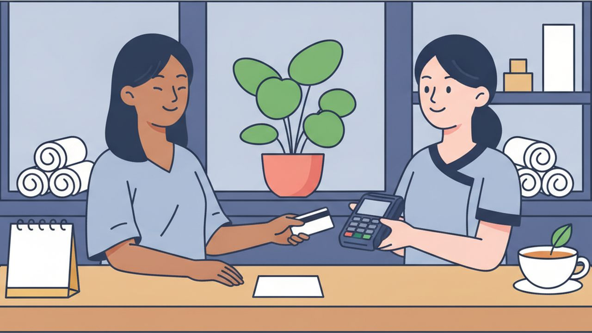

ロールプレイング ②
ドライヘッドスパの会計

場面設定
90分コースの施術を終え、着替えを済ませたカンボジア人のお客様が、フロントで会計をする場面。リピーター獲得のため、日本人の店員から「前もって次回予約すると割引がある」という案内をする。
登場人物: 受付スタッフ（店員）／お客様（បង、女性を想定）
保存されるファイル名: 02_ドライヘッドスパの会計_v1.0_20261105.pdf
会話
店員
សេវាកម្មថ្ងៃនេះយ៉ាងម៉េចដែរ?
お客様
ចាស ល្អណាស់។
ខ្ញុំមានអារម្មណ៍ថាស្រួលខ្លួន។
店員
សរុបថ្ងៃនេះ សម្រាប់សេវាកម្ម៩០នាទី តម្លៃ៤៥ដុល្លារ។
តើបងចង់បង់ជាលុយសុទ្ធ ឬកាត?
お客様
តាមកាត។
店員
អរគុណ។
លើកក្រោយ បើបងកក់ទុកមុន នឹងទទួលបានការបញ្ចុះតម្លៃ១០ភាគរយ។
フリートークにつながる質問
会話のあと、役を離れてこの質問で話を広げてみてください。答えは思いつく範囲で構いません。
質問 1
តើបងធ្លាប់ទទួលបានការបញ្ចុះតម្លៃដោយកក់ទុកមុនដែរឬទេ?
扱った単語（16語）
| # | クメール語 | 読み方 | 意味 |
|---|---|---|---|
| 1 | យ៉ាងម៉េចដែរ | ヤーンマッチ・ダエ | どうですか（感想を尋ねる） |
| 2 | អារម្មណ៍ | アーロム | 気分・感覚 |
| 3 | ស្រួលខ្លួន | スルオル・クルオン | 体が楽な・気分がいい |
| 4 | ថា | ター | 〜と（内容を受ける） |
| 5 | សរុប | サロップ | 合計 |
| 6 | លុយសុទ្ធ | ルイ・ソット | 現金 |
| 7 | កាត | カート | カード |
| 8 | បង់ | ボン | 支払う |
| 9 | តាម | ターム | 〜で（手段） |
| 10 | លើកក្រោយ | ルーク・クラオイ | 次回 |
| 11 | កក់ទុកមុន | コッ・トック・ムン | 前もって予約する |
| 12 | ទទួល | トトゥオル | 受け取る |
| 13 | បញ្ចុះតម្លៃ | ボンチョホ・ドムライ | 割引 |
| 14 | ភាគរយ | ピアック・ローイ | パーセント |
| 15 | ធ្លាប់ | トロアップ | 〜したことがある（経験） |
| 16 | ដោយ | ダオイ | 〜によって |
表現・文法の解説
1យ៉ាងម៉េចដែរ?（〜はどうでしたか？）
感想・様子を尋ねる言い方。「〜ですか」で答えられる質問（コース紹介の場面で使った表現）とは違い、自由な感想を引き出したいときに使う。日常会話でよく使われる自然な聞き方。
2ឬ（〜か〜か、選択疑問文）
2つの選択肢を並べて「どちらですか？」と尋ねる時に使う接続詞。例: លុយសុទ្ធ ឬកាត（現金かカードか）。
3លើកក្រោយ + 動詞（次回は〜）
「次回」を意味する語を文頭に置いて、次の来店時の提案をする表現。接客でのリピーター獲得の案内に頻出。
4数字＋ភាគរយ（パーセントの言い方）
「数字＋ភាគរយ」の順でパーセントを表す（例: ១០ភាគរយ＝10%）。割引・特典の説明で使う。
--- *※ 割引率（10%）はサンプルです。実際の店舗ポリシーに合わせて変更してください。*